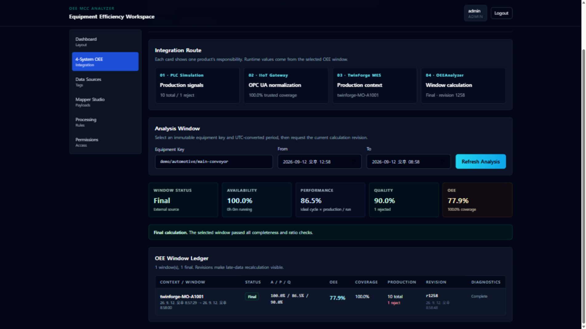

운영자가 조회하는 항목
Equipment Key, UTC From·To와 Refresh Analysis를 사용합니다. 네 Route 카드는 선택 기간의 최신 window에서 생산량, coverage, context ID, 상태와 revision을 가져옵니다.
OEEAnalyzer는 Gateway가 제공하는 생산 누적량·불량 누적량·설비 상태·카운터 세대와 TwinForge의 작업지시 맥락을 결합합니다. 유효한 관측 구간만으로 A/P/Q/OEE를 계산하고, coverage와 결측 원인을 결과에 함께 남깁니다.

FOUR-SYSTEM INTEGRATION
Integration Overview는 PLC → Gateway → OEEAnalyzer의 계측 경로와 TwinForge → OEEAnalyzer → TwinForge의 맥락·결과 경로를 분리해 보여줍니다. 두 경로는 불변 equipmentKey로 만납니다.
Equipment Key, UTC From·To와 Refresh Analysis를 사용합니다. 네 Route 카드는 선택 기간의 최신 window에서 생산량, coverage, context ID, 상태와 revision을 가져옵니다.
demo/automotive/main-conveyor와 조회 기간을 입력합니다.oee.integration.v1 Kafka 이벤트와 기간 결과를 저장합니다.PERIOD ANALYTICS
Live OEE는 선택한 설비와 UTC 기간의 가용성, 성능, 품질, OEE를 보여줍니다. 숫자만 표시하지 않고 coverage, 결과 상태, reasons와 revision을 함께 제공합니다.
Equipment Key, From, To와 Refresh를 사용해 기간을 조회합니다. 다섯 지표 카드는 status, A/P/Q/OEE와 coverage를 보여주고, Ledger는 생산·불량 증가분, revision, 계산 시각과 diagnostics를 행별로 표시합니다.
RunSeconds ÷ PlannedProductionSeconds로 계획 생산시간 중 실제 가동 비율을 구합니다.ΔTotal × IdealCycle ÷ RunSeconds와 (ΔTotal-ΔReject) ÷ ΔTotal을 계산합니다.A × P × Q와 유효 관측시간 비율을 반환하고, 결측이면 OEE를 정상 숫자로 꾸미지 않습니다.TWINFORGE RESULT PANEL
TwinForge의 External OEEAnalyzer 패널은 활성 작업지시를 계산 맥락으로 동기화하고, 같은 설비·기간에서 계산된 A/P/Q/OEE와 coverage를 기존 MES 화면 안에 표시합니다.
External 상태, A/P/Q/OEE, coverage, Equipment, Work order, Product, Context ID와 Last sync를 확인합니다. Sync now는 백그라운드 동기화를 즉시 다시 실행합니다.
twinforge-{orderId}와 Idempotency-Key: contextId:version으로 작업·제품·종료·ideal cycle을 전송합니다.DATA SOURCES
Configuration Workspace는 OPC UA 장치 이름, 보안 정책, endpoint와 node-to-tag 매핑을 관리합니다. 연결 시험과 저장 결과, 현재 등록된 프로토콜 태그를 같은 화면에서 확인할 수 있습니다.
OPC UA 탭에서 Device Name, Security Policy와 Endpoint URL을 입력합니다. 각 node row에는 Node ID, Data Type과 Custom Tag를 지정하고 Add Node·Remove로 행을 관리합니다.
/api/protocols/opcua/test가 endpoint 연결을 시도하고 성공 여부를 배너로 돌려줍니다.PROCESSING RULES
Processing Rules의 OEE Logic Builder는 등록된 프로토콜 태그를 설비의 생산량·불량·상태와 ideal cycle에 매핑합니다. 4-System 데모가 사용하는 Gateway endpoint, counter epoch와 품질 정책은 Docker의 Integration binding으로 별도 관리합니다.
Equipment ID를 입력하고, 등록된 태그에서 totalTag·defectTag·statusTag를 선택한 뒤 Ideal Cycle Time을 지정합니다. 모든 값이 유효하면 Save OEE Mapping이 활성화됩니다.
http://examples.org/UA/DataAccess/ namespace를 연결마다 해석하고 네 노드를 함께 읽습니다.NEXT PRODUCT
MES가 계산 경계를 제공하고 OEEAnalyzer가 반환한 External A/P/Q/OEE·coverage·revision을 운영 화면과 3D 설비에 표시하는 흐름을 확인하세요.